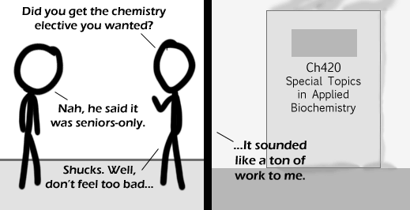

Comic JK 420
When I Feel Like It
⇤
<
?
>
⇥

⇤
<
?
>
⇥
Forum
.
RSS
.
Digg
.
Facebook
.
Reddit
.
Twitter
.
Stumbleupon
:oD Very mature Restored from [h-t-t-p://]70.225.132.197/comicjk/viewer.php?comic=420 (again, again again again...): nter your thoughts on number 420 here. Please, no spamming, trolling, or phreaking. this is a very niche comic. for the rest of the world, there is a subtle pun. As a physics person, I can safely say I don't get it. It's about sexual reproduction in the human species, isn't it? (By the way, I love the way "species" is pronounced in English) I'm pretty sure it's about the number 420. As in 4/20, national marijuana day. And then the class would be about recreational drugs. Of course, I could just be wrong. >Correct. >>yeah, it's applied biochemistry, like, they test the effects of special chemicals on the body. And then there is smoke coming from inside the room, so it's pot. Also, the 420 reference. get it? >>>though the rollover-text implies marijuana for pain relief, not recreational use... I just finished a Genetics 420 course, sadly it wasn't about making a "stronger" breed of everybody's favorite plant > Why would anybody need a stronger breed of lavender? >> Lavender is evil. It turns little boys into little girl-like things with breasts. I wondered why all that smoke was coming out of the room... >and I innocently thought it was a reference to the well-documented ability of students to accidently set things on fire in lab work... despite the fact they aren't handling anything flammable at the time... The best jokes are the ones you don't get immediately (sometimes because they weren't posted on the dot at midnight). OH SHI- I just realised that this is comic 420..